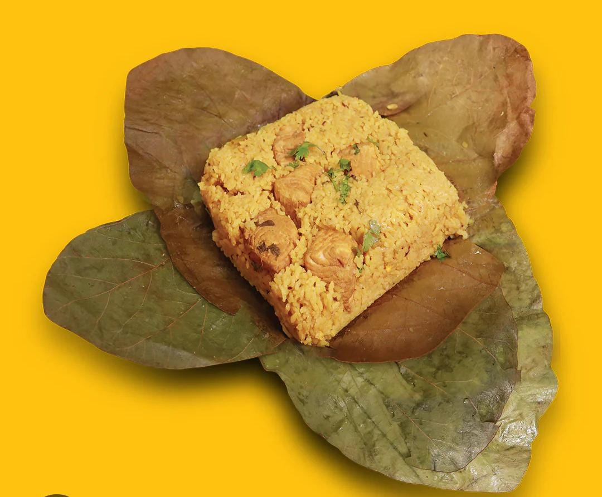

Meen Kozhungarai (Fish Rice in Leaf)

Ingredients:
- 2 cups Cooked Rice
- 300g Fish (cleaned, boiled & shredded)
- 2 tbsp Gingelly oil
- 1 Onion (finely chopped)
- 2 Green chilies (slit)
- 1 Tomato (chopped)
- 1 tsp Ginger-garlic paste
- 1/2 tsp Turmeric powder
- 1 tsp Red chili powder
- 1 tsp Coriander powder
- 1/2 tsp Garam masala
- Salt to taste
- Curry leaves – few
- Banana / Mandharai leaf for wrapping
Preparation:
- Heat oil in a pan, sauté onions, green chilies, and curry leaves till golden.
- Add ginger-garlic paste, fry until raw smell leaves.
- Add tomato and cook till soft.
- Add turmeric, chili powder, coriander powder, garam masala, and salt.
- Mix in the shredded fish and sauté for 5 minutes.
- Add cooked rice and combine gently with the masala.
- Place this rice mixture on a banana/mandharai leaf and fold into a parcel.
- Steam the parcel for 5–10 minutes so flavors infuse well.
- Serve hot — open the leaf and enjoy the authentic Kongu-style Meen Kozhungarai!